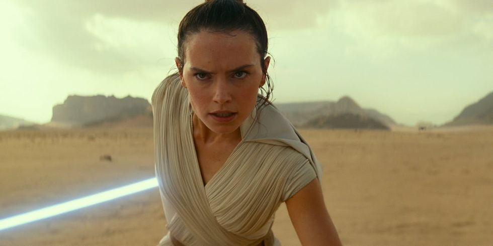
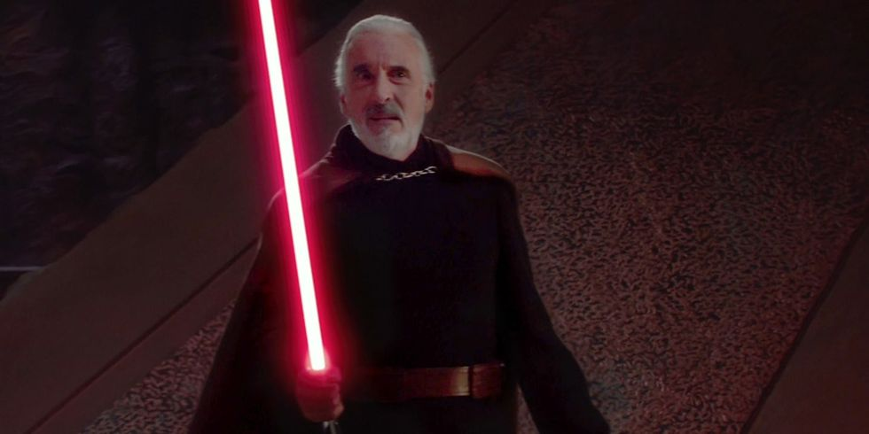

EN UNA GALAXIA MUY, MUY LEJANA....
EN UNA GALAXIA MUY, MUY LEJANA....
C-3PO
C-3PO es un habitual de la saga, ha aparecido en todas las entregas. Sin embargo, bajo su excelente e icónico diseño, se esconce un androide al servicio de los humanos que resulta irritante en muchas de sus intervenciones, como esa voz de la conciencia a la que dan ganas de abofetear para que nos deje equivocarnos.
BB-8
BB-8, el droide astromecánico con forma de balón perteneciente al piloto Poe Dameron, difiere mucho de sus primos mecánicos R2-D2 y C-3PO. Fiel a los planes de la Resistencia, gracias a su simpatía se ha convertido en uno de los personajes más queridos de la nueva trilogía.
Rey
Una historia de inicio que recordaba a la de Luke, la del viaje de una doña nadie hacia un destino con el que tan solo soñaba y que, sin embargo, iba mucho más allá. Rey es uno de los grandes aciertos de la última trilogía, la Jedi más poderosa y también inspiradora para toda una generación, al igual que lo fue Leia Organa para nuestros padres.
Leia Organa
Una fortísima mujer en una galaxia plagada de hombres, droides, wookies y demás especímenes. Si crees que con la teniente Ripley comenzó aquello de huir del estereotipo de la damisela en apuros, te aconsejamos que eches la vista más atrás hasta esta película protagonizada por una mujer empoderada. Nadie le ha plantado cara a Vader como ella.
Kylo Ren
Un villano bien construido, en parte, gracias al gran actor que es Adam Driver, que se debate entre seguir la estela de destrucción del abuelo Vader o acudir a la luz de sus padres. Sus complejos, frustraciones y conflictos internos lo vuelven tan real que solo podemos rendirnos ante descomunal personaje.
Obi-Wan Kenobi
Sir Alec Guinness destacó en este papel, pero fue Ewan McGregor el que lo hizo suyo. El maestro Kenobi es uno de los personajes más interesantes de 'Star Wars', desde sus primeros días con esa trenza de Padawan hasta su evaporación ante Vader. Tras años de espera, al fin pudimos saber qué ocurrió entre los episodios III y IV gracias a 'Obi-Wan Kenobi', la serie de Disney+. Una lástima que el resultado final fuera algo decepcionante hasta el punto de llegar a pensar que 'Obi-Wan Kenobi' ha ridiculizado a su personaje principal.
Conde Dooku
El Sith más elegante, con un porte que recordaría al del mismísimo Drácula, personaje que también inmortalizaría Sir Chritopher Lee, amo y señor de las tinieblas. No hace falta decir más.
Mace Windu
Windu, uno de los Jedi más poderosos, tendría un gran peso en la primera trilogía y, en ocasiones, parece que es el único personaje con dos dedos de frente al sospechar sobre las oscuras intenciones de cierto canciller. El propio Samuel L. Jackson tuvo que convencer a George Lucas para que su sable fuera morado porque ser un Jedi no está reñido con el estilo, ni en la Tierra ni en Haruun Kal.
Grogu
Este diminuto ser de ojos negros y enormes orejas nos ha robado el corazón desde que apareciera por primera vez en 'The Mandalorian'. Su dúo con Din Djarin, su fiel protector, de lo mejorcito de la galaxia. Atención a la conexión entre Baby Yoda, Darth Vader y Kylo Ren. Después de esto, ¿te sigue pareciendo tan mono?
Jabba El Hutt

Si has llegado hasta aquí con la intención de ver una de esas películas sobre la amistad entre niños y animales, esta no es tu película. Jabba es uno de los "disfrutones" de este universo galáctico, amante de los saraos con buena música, las esclavas sumisas y ligeras de ropa y las ejecuciones con espectáculo. Si pensaste que Don Vito Corleone era el gran mafioso del cine, es porque no has tenido todavía la desgracia de cruzarte con la babosa del crimen por excelencia.
Finn
Nos gusta Finn. Su personaje en 'El despertar de la fuerza', como un soldado desertor de la Primera Orden, resulta muy interesante y supone dar voz a unas tropas de asalto que nunca la tuvieron. ¿El problema? Que su importancia se disuelve como un azucarillo a medida que avanza la última trilogía y que su cacareado enfrentamiento contra Phasma se queda en una broma.
Emperador Palpatine
El Sith más poderoso, el Lado Oscuro en persona, presente en las tres trilogías. En la primera, le pudimos conocer como un convincente senador con especial arte para el engaño; en la original, fue el gran líder del Imperio; y en la última, un incomprensible parche puesto por J.J. Abrams para intentar salvar los muebles. ¡Pooo-deeeeeeer ilimitaaaadooo!
Chewbacca
Chewie, el fiel compañero de Han Solo, un wookie tan temperamental (nunca juegues con él al Dejarik) como enemigo del Imperio. Copiloto, mecánico y "felpudo con patas", detrás de esa apariencia intimidatoria se esconde el mejor amigo que uno pueda desear, ese que nunca falla y que siempre gruñe.
Gui Gon Jinn
Antes de protagonizar algunas de las mejores películas de acción de los últimos años, como 'Venganza', Liam Neeson ejerció como maestro de Obi-Wan y fue el mejor personaje de 'La amenaza fantasma', a pesar de su mal ojo al descifrar la profecía sobre el Elegido para traer el equilibrio a la Fuerza.
Redes Sociales


Aviso: Lucasfilm Ltd. se esfuerza por fomentar un entorno inclusivo, diverso y seguro para nuestros fans y le pedimos lo mismo a nuestra comunidad de fans. Las organizaciones de fanáticos, sitios web, blogs, clubes, podcasts, cuentas de redes sociales, etc. no son propiedad de Lucasfilm Ltd. o The Walt Disney Company, ni están respaldados, patrocinados, controlados ni afiliados de ninguna manera con Lucasfilm Ltd. o The Walt Disney Company, y no reflejan necesariamente las opiniones o opiniones de Lucasfilm Ltd., The Walt Disney Company o cualquiera de sus afiliados, y no se ofrece ninguna garantía expresa o implícita con respecto a la precisión, adecuación, integridad, legalidad, confiabilidad o utilidad de cualquier información. Consulte los términos de los acuerdos de uso y las políticas de privacidad que se aplican a dichos servicios y contenidos de terceros. Logotipos, marcas registradas, nombres de personajes y todos los elementos relacionados de Star Wars © & ™ Lucasfilm Ltd. y/o The Walt Disney Company.